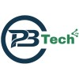
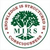
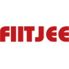

About me
I build research-based AI systems that ship — LLM pipelines, graph theory, Vision/NLP and multimodal learning for real-world impact. I care about impact, clear writing, and results that move metrics.
Currently an AI Engineer at PTC, building Graph RAG pipelines, AutoTSG generation, and retrieval evaluation harnesses that cut hallucination rates and triage time in production. I co-founded CosmosAId, a B2B student networking platform with a proprietary neural recommendation engine. My research spans agentic AI, OCR, and multimodal computer vision, with work published in IEEE.
What I'm Doing
-
Machine Learning
My interests are in ML Research, Computer Vision, NLP, Multimodal learning, Continual learning, HCI and Causal Inference. Authored 20+ papers with 50+ citations.
-
LLM & RAG Engineering
Building production-grade Agentic AI pipelines, Graph RAG systems, and LLM evaluation harnesses — with semantic observability and measurable hallucination reduction in live systems.
Current and past affiliations
The organisations, institutes, and programs I am currently working for or have worked in the past.
-
PTC AI Engineer · Windchill Oct 2025 – Jun 2026
-

PB Tech Services Software Engineer Mar – Oct 2025 -
IIIT Kottayam Summer Researcher Feb – Jun 2025
-
IIIT Kancheepuram Visiting Studentship Dec 2024 – Feb 2025
-
SmartBridge AI / ML Intern May – Aug 2024
-
IEEE RAS · VIT Open Source Developer Dec 2022 – Sep 2023
-
Google DSC Data Science Member Oct 2022 – Sep 2023
-
VIT Chennai B.Tech CSE 2021 – 2025
-

Maharishi International Residential School Secondary School 2017 – 2021 -

FIITJEE Engineering Entrance Coaching 2017 – 2021